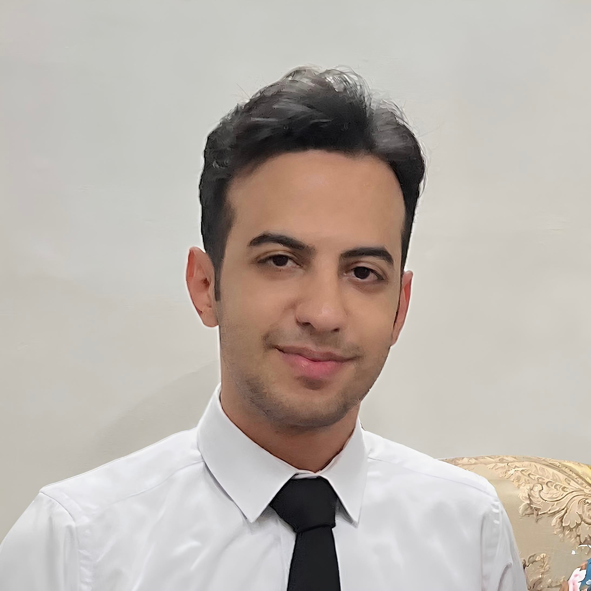
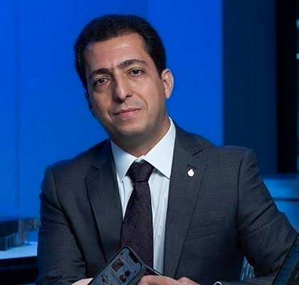
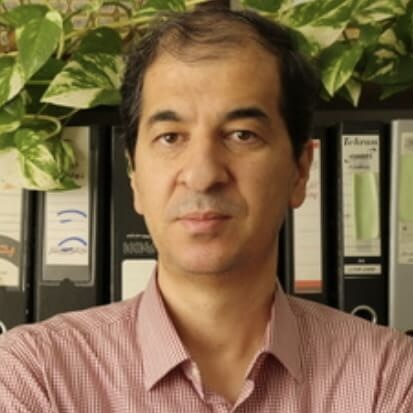
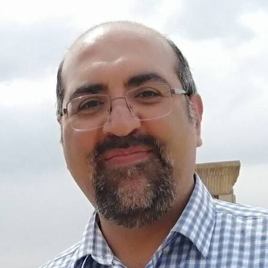
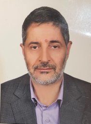

Research Intern, University of Electronic Science and Technology of China
Sep 2026 - PresentDetails
- Building foundational knowledge of vision-language models (VLMs) as part of research onboarding.
Computer Science graduate & AI/ML researcher
saleh.shakoor.edu@gmail.com
LinkedIn
GitHub
I am a Computer Science graduate and AI/ML researcher. I have worked on research projects at Macquarie University and Amirkabir University of Technology, and I have backend engineering experience from industry. My next step is a research-focused graduate path, and I am eager to stay engaged with international research activity.

Natural Language Processing, Large Language Models, Vision-Language Models, Agentic AI, Information Retrieval, Uncertainty Quantification.
English - TOEFL iBT 93 / 120
Professional Working Proficiency ·
Persian - Native
Research Intern, University of Electronic Science and Technology of China
Sep 2026 - Present · China | Remote
Supervised by Prof. Chaoning Zhang
When Neighbors Mislead: A Retrieval Framework for Misinformation
Detection
Saleh Shakoor, Behnam Yousefimehr, Mehdi Ghatee
Manuscript in preparation · 2026
References: Click to see the professors & researchers I have had the privilege of working with.
When Neighbors Mislead: A Retrieval Framework for Misinformation
Detection
Saleh Shakoor, Behnam Yousefimehr, Mehdi Ghatee
Manuscript in preparation · 2026
I wanted to build real international research experience. The Centre for Applied Artificial Intelligence stood out for its active, fast-moving environment, so I reached out to Prof. Amin Beheshti and asked for an internship. I had the option to join an ongoing graduate project or design my own, and I chose to design mine around Trustworthy and Explainable AI, an area I care deeply about. I noticed that semantic retrieval based methods often failed at misinformation detection and content credibility assessment, so I set out to design a more reliable way to retrieve similar cases for this task. It was my first real experience in an international research setting, and it laid the groundwork for my future career.
When I decided to start my journey into academic AI research, joining the Innovation and Data Science Lab under the supervision of Dr. Mohammad Akbari turned out to be one of the best opportunities I could have asked for. The lab always had active projects, and students worked closely together across every stage of the work, so undergraduates like me could learn directly from graduate researchers. When I joined, the lab's main project was a Persian language intelligent assistant built around three modules: media recommendation, time and task management, and information retrieval. I was assigned to the time and task management module.
Before moving into AI, I worked as a backend developer, and one of my most meaningful roles was at a company building a navigation and maps product. That experience sparked my curiosity about vehicle routing problems, so I chose it as my thesis topic and worked on it under the supervision of Prof. Mostafa Shamsi. It gave me a deep appreciation for local search and metaheuristic methods, and it's where my research instincts really started to take shape.
As a computer science student, I was eager to get real industry experience beyond what academia could offer, since a lot of practical software skills just aren't something you pick up in a classroom. I also had a strong drive to go deep on software engineering, because I knew implementation skills matter as much in research as they do in industry. That's how I joined Neshan Maps through a backend development bootcamp. Neshan is a navigation and maps product that guides millions of Iranians to their destinations every day. Interestingly, global players like Google Maps and Apple Maps have a much smaller footprint in Iran, mainly because Neshan is built around local needs and feels more natural for people to use.
Early in my studies, a group of students from my department started GoldScan, a fintech startup. I had no real industry experience at that point, and I wanted to put myself in a fresh, fast-moving environment, one that could become a real starting point for my own growth.
Reviewed student projects and co-designed exercises applying AI to game implementations.
Led the newly-onboarded group of teaching assistants; coordinated their responsibilities and co-designed semester projects.
Mentored students on OOP and design patterns; graded projects for code quality.
Benchmarked 10 classifiers with leakage-safe Scikit-learn pipelines on a deduplicated UCI dataset.
[Repository]Built a PyTorch MLP with Dropout optimized for high malignant recall in tumor classification.
[Repository]Predicted patient survival from clinical records using a tuned MLP with PCA and SMOTE.
[Repository]Implemented classical computer vision algorithms from filtering to homography without high-level libraries.
[Repository]Implements an Expectiminimax agent with utility functions to optimize decisions under game uncertainty.
[Repository]Amirkabir University of Technology
GPA: 17.38 / 20.00
MLx Representation Learning & Generative AI University of Oxford
| Course | Grade |
|---|---|
| Artificial Intelligence | 20 / 20 |
| Mathematical Software | 19.75 / 20 |
| Operating Systems | 19.5 / 20 |
| Advanced Programming | 19.3 / 20 |
| Numerical Linear Algebra | 18.75 / 20 |
| Entrepreneurship | 20 / 20 |
| Research Methods | 19 / 20 |
| Software Design | 18 / 20 |
| Computer Networks | 17.5 / 20 |
| Algorithm Design | 17.2 / 20 |
Professors I have had the privilege of working with and learning from throughout my research and studies.



